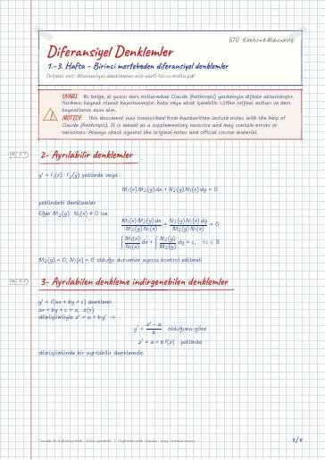
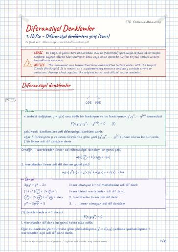
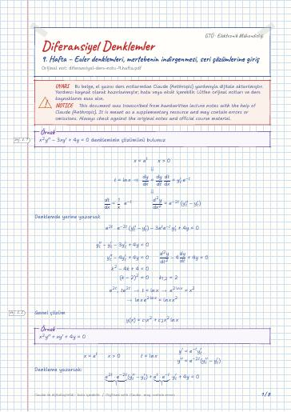
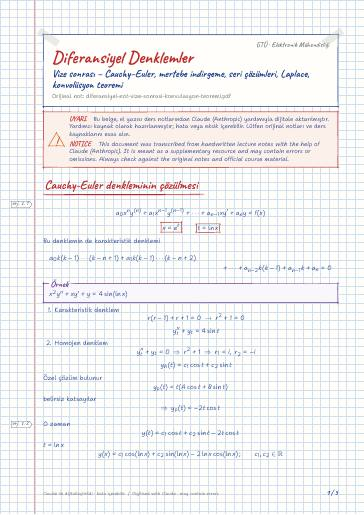
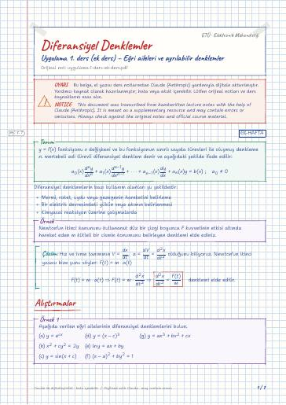
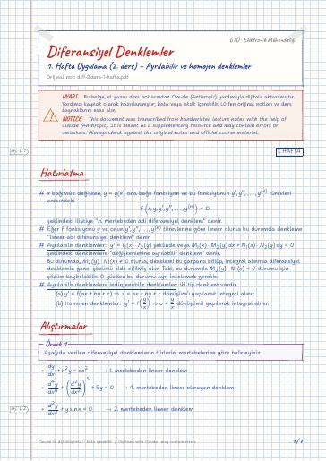
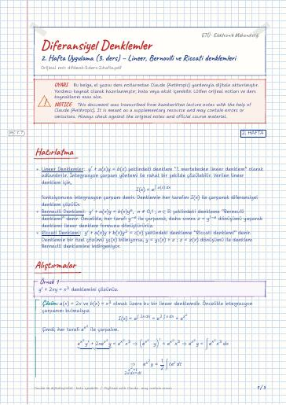
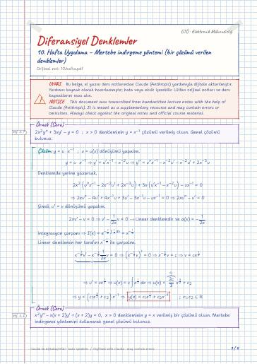
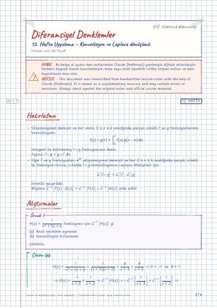
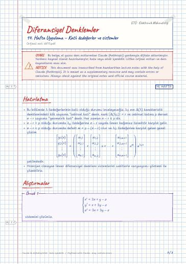

Weeks 1–3 – First-order differential equations
2- Ayrılabilir denklemler · 3- Ayrılabilen denkleme indirgenebilen denklemler · Aşağıdaki dönüşümler lazım olabilir · 4- Homojen denklemler · Lineer Denklemler · Bernoulli Denklemi
Diferansiyel Denklemler — ders notları, çıkmış sorular · Gebze Teknik Üniversitesi (GTÜ) Elektronik Mühendisliği
First-order equations, higher-order linear equations, the Cauchy–Euler equation, reduction of order, series solutions and the Laplace transform.
Birinci mertebeden denklemler, yüksek mertebeden lineer denklemler, Cauchy–Euler denklemi, mertebe indirgeme, seri çözümleri ve Laplace dönüşümü.
On this page: General Lecture notes Recitation notes Digital notes (LaTeX) Past exams
Most files are in Turkish; file and folder names are shown as they appear in the repository.
Searchable digital versions of the handwritten notes, typeset in LaTeX (the notes are written in Turkish). Template and build: latex-sablon.

2- Ayrılabilir denklemler · 3- Ayrılabilen denkleme indirgenebilen denklemler · Aşağıdaki dönüşümler lazım olabilir · 4- Homojen denklemler · Lineer Denklemler · Bernoulli Denklemi

Diferansiyel denklemler · 1.21.2 Cauchy Problemi (veya başlangıç değer problemi) · 22 Ayrılabilir denklemler · 33 Ayrılabilen denkleme indirgenebilen denklemler · 44 Homojen denklemler

Mekanik ve fizik problemlerinin Diferansiyel Denklemlere dönüştürülerek çözülmesi · (1) Newtonun ikinci kuralı · (2) Oran problemleri (Radyoaktif parçalanma ve popülasyon) · (3) Karışım problemleri · Soğuma Problemleri · Varlık ve teklik

Mertebenin indirgenmesi · Diferansiyel Denklemlerin Seri Çözümleri · Analitik fonksiyonlar

Cauchy-Euler denkleminin çözülmesi · Mertebelerin indirgenmesi · Hatırlatma · Serisel Çözümler · Adi nokta civarında çözüm yolu · Forbenius yöntemi


Hatırlatma · Alıştırmalar

Hatırlatma · Alıştırmalar

Hatırlatma · Alıştırmalar


Hatırlatma · Alıştırmalar

Hatırlatma · Alıştırmalar

Hatırlatma · Alıştırmalar
Circuit Theory I · Circuit Theory I Laboratory · Electronic Devices · English · Numerical Analysis · Turkish I
Open the folder on GitHub← Semester 3
Course materials belong to their instructors and GTU and are shared for educational purposes only.